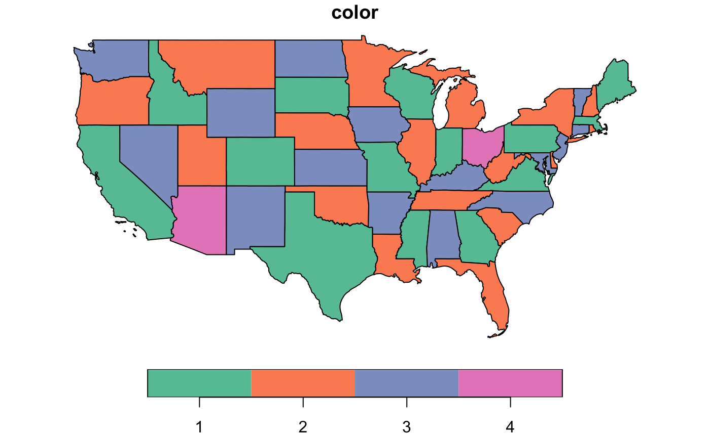

These functions perform graph coloring using various algorithms over an adjacency list.
In graph theory, graph coloring is a special case of graph labeling; it is an assignment of labels traditionally called "colors" to elements of a graph subject to certain constraints. In its simplest form, it is a way of coloring the vertices of a graph such that no two adjacent vertices share the same color; this is called a vertex coloring.
graph_coloring_dsatur(adj_list) graph_coloring_msc(adj_list) graph_coloring_lmxrlf(adj_list) graph_coloring_hybrid_dsatur_tabucol(adj_list) graph_coloring_hybrid_lmxrlf_tabucol(adj_list) graph_coloring_tabucol(adj_list, k)
| adj_list | an adjacency list in the format of |
|---|---|
| k | number of colors to use for graph coloring |
graph_coloring_hybrid_dsatur_tabucol() and graph_coloring_hybrid_lmxrlf_tabucol() use a hybrid approach
to run DSATUR and lmXRLF first to determine an upper bound for the graph chromatic number. It then searches
better solutions by running lowered chromatic number through TabuCol to check if the graph can be colored
with less colors.
graph_coloring_dsatur: Color graph using DSATUR algorithm
(Brélaz 1979)
graph_coloring_msc: Color graph using Maximum Cardinality Search(MCS) algorithm
(Palsberg 2007)
graph_coloring_lmxrlf: Color graph using Least-constraining Most-constrained eXtended RLF(lmXRLF) algorithm
(Kirovski et al. 1998)
graph_coloring_hybrid_dsatur_tabucol: Color graph using a hybrid of DASTUR and TabuCol algorithm
(Kirovski et al. 1998; Brélaz 1979; Hertz and de
Werra 1987)
graph_coloring_hybrid_lmxrlf_tabucol: Color graph using a hybrid of lmXRLF and TabuCol algorithm
(Kirovski et al. 1998; Hertz and de
Werra 1987)
graph_coloring_tabucol: Color graph using TabuCol algorithm
(Hertz and de
Werra 1987)
https://en.wikipedia.org/wiki/Graph_coloring
https://github.com/brrcrites/GraphColoring
Brélaz D (1979). “New Methods to Color the Vertices of a Graph.” Commun. ACM, 22(4), 251--256. ISSN 0001-0782, doi: 10.1145/359094.359101 , http://doi.acm.org/10.1145/359094.359101.
Palsberg J (2007). “Register Allocation via Coloring of Chordal Graphs.” In Proceedings of the Thirteenth Australasian Symposium on Theory of Computing - Volume 65, series CATS '07, 3--3. ISBN 1-920-68246-5, http://dl.acm.org/citation.cfm?id=1273694.1273695.
Kirovski D, Potkonjak M, Potkonjak M (1998). “Efficient Coloring of a Large Spectrum of Graphs.” In Proceedings of the 35th Annual Design Automation Conference, series DAC '98, 427--432. ISBN 0-89791-964-5, doi: 10.1145/277044.277165 , http://doi.acm.org/10.1145/277044.277165.
Hertz A, de Werra D (1987). “Using Tabu Search Techniques for Graph Coloring.” Computing, 39(4), 345--351. ISSN 0010-485X, doi: 10.1007/BF02239976 , http://dx.doi.org/10.1007/BF02239976.
library(tidygraph) if (requireNamespace("sf", quietly = TRUE) && requireNamespace("USAboundaries", quietly = TRUE)) { library(sf) library(USAboundaries) us_states() %>% filter(!(name %in% c("Alaska", "District of Columbia", "Hawaii", "Puerto Rico"))) %>% transmute( color = st_intersects(.) %>% graph_coloring_dsatur() %>% as.factor() ) %>% plot() }#>#>#>